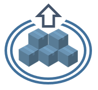

BUT4Reuse
Intro
Documentation
Download
Source Code
Issue Tracker
About

BUT4Reuse
Bottom-Up Technologies for Reuse
What is BUT4Reuse?
BUT4Reuse provides a unified framework for
mining software artefact variants
.
Commonality and variability analysis
Feature identification
Feature location
Feature constraints discovery
Feature model synthesis
Reusable assets construction
Easily extensible for your own needs. Currently it supports several artefact types:
Java
C
EMF Models
Textual files
File structures
JSON and CSV files
... and much more. Check the
list of adapters
Tweets de @BUT4reuse
Documentation
Check
the BUT4Reuse wiki
, you will find:
Getting started guide and tutorials
User manual
The list of available adapters
Artefact variant examples
How to integrate new adapters, algorithms and techniques
How to use benchmarks for your algorithms and techniques
Research publications
... and much more.
BUT4Reuse tool overview
Download
Follow the
installation instructions
Source Code
The source code is in
the github repository
Issue tracker
If you find a bug or you have an enhancement request, please report it at
the issue tracker
About
The main involved institutions are:
SnT, University of Luxembourg, Luxembourg
Lip6, University Pierre and Marie Curie (UPMC), Paris, France
If you want to collaborate or you have a case study
send us an email:
but4reuse@gmail.com